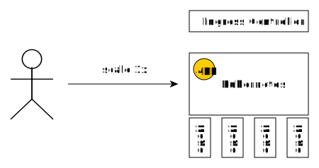
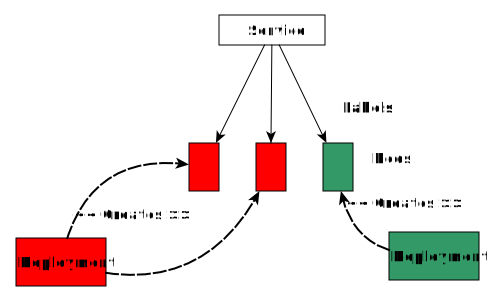

Azure Kubernetes Service
Wojciech Barczyński - Hypatos.ai
wbarczynski.pro@gmail.com
Wojciech Barczyński
- Lead Software Engineer & System Engineer
- Golang Warsaw Organizer
- Interests:
working software - Hobby:
teaching software engineerings
Talks & Trainings - wbarczynski.pl
Background
- ML FinTech ➡ microservices and k8s
- Before:
1 z 10 Indonesian mobile ecommerce
(Rocket Internet) - Spent 3.5y with Openstack:
small team, 1000+ nodes, 21 data centers - I do not like INFRA :D
Kubernetes
Kubernetes
- Container orchiestration
- Batteries for your 12factory apps*
- ...heading to integration platform
- Independent from IaaS provider
* - not only
Kubernetes
make docker_push; kubectl create -f app-srv-dpl.yaml
Scale up! Scale down!

kubectl --replicas=3 -f app-srv-dpl.yaml
Scale up! Scale down!
kubectl --replicas=1 -f app-srv-dpl.yaml
Basic Concepts
| Name | Purpose | |
|---|---|---|
| Service | Interface | Entry point (Service Name) |
| Deployment | Factory | How many pods, which pods |
| Pod | Implementation | 1+ docker running |
How get user requests?
 Ingress Controller
Ingress Controller
service.yaml
apiVersion: apps/v1
apiVersion: v1
kind: Service
metadata:
name: intro-app-svc
spec:
ports:
- port: 80
protocol: TCP
selector:
app: intro-app
type: LoadBalancerhttps://github.com/wojciech12/workshop_kubernetes_and_cloudnative
Deployment.yaml
apiVersion: apps/v1
kind: Deployment
metadata:
name: demo-api
labels:
app: demo-api
spec:
replicas: 3
strategy:
type: Recreate
selector:
matchLabels:
app: demo-api
template:
metadata:
labels:
app: demo-api
spec:
containers:
- name: app
image: wojciech11/api-status:1.0.0
ports:
- containerPort: 80https://github.com/wojciech12/workshop_kubernetes_and_cloudnative
Kubernetes @ Azure
Options
- AKS - managed
ACS- Your own installation with installer
- RedHat Openshift
Azure Kubernetes Service
- GKE for Google
- EKS or Fargate for Amazon
AKS
- Independent from IaaS
- Our OnPrem = Our OnCloud
- Reuse all my knowhow from OnPrem and GKE
- Plug and play, e.g., monitoring
AKS
- Managed kuberenetes
- Integration with Azure Infrastrukture
- Addons: monitoring
See docs
Azure K8S Integration
- Load Balancers
- Persistence Volumes including Resizable Volumes
- Graphic Cards Support
- Authentication and the Azure AD integration
- Monitoring as an addon
Managed
- You: k8s workers
- Azure: k8s masters
Managed - You
- Upgrade your k8s
- Can ssh to your workers
- Can modify and restart kube-system pods
- Node updates when we restart a node
Managed - Azure
- update your kube-system pods
- k8s config
- updates on nodes mem-pres and on-restart
Updates from Azure
Bumpy but no time to waste!
- Kubernetes configuration - ☠
- System memory-preserving updates - ☠
Limits
- No node-pool support
- Volumes in MC_YOUR_CLUSTER_NAME
resource group ☠ - CD: Service Principle for AKS gets always an admin token
Annoying
- Limits
- Slow attaching and detaching volumes
- Watch out:
limits volumes attached to node (1 core = 1 disc) Slow deletesYou are not able to delete a pod without--force
Love!
- Openness on github: AKS issues
AKS
@ SMACC.io / Hypatos.ai
Our setup Azure (1)
- az aks CLI for setting k8s
- aks imported to terraform
- Terraform for everything else
TF also sets our AWS
Our setup Azure (2)
- Create AKS clusters with TF
Databases 1: Managed
- Postgres
- CosmosDB as Mongodb
Databases 2: in AKS
- Postgres
- Mongodb
- Kafka
- Etc/Vault
Note: you should know what you do.
Replication factor and Backup.
Tech
- Golang for all
- Python for Machine Learning
- JS && Emberjs WebUI
- OpenAPI
- ML Pipeline - evaluate kubeflow i patchyderm
Kubernetes
- Pure, generated, kubernetes config
- 2x kubernetes operators
Cloud Native
- Observability: Prometheus stack and EFK
- Traefik for ingress
- etcd + Vault
Continuous Deployment
- Github
- TravisCI
- hub.docker.com
- Kubernetes
In spirit similar to the Kelsey Hightower approach
Continuous Deployment
- master -> dev
- tag -> staging
- PR accepted -> production
In spirit similar to the Kelsey Hightower approach
How to start
Prerequirements
- az CLI
- kubectl
Create
az aks create --name my-aks-pet \
--resource-group GROUP \
--node-vm-size 'Standard_D4_v2' \
--node-count 4 \
--service-principal \
--client-secretAlways with SP! TF recommended
Create
- Demo: portal
Do not create AKS throught portal
Ready to go!
az aks get-credentials \
-g GROUP \
-n MyAKSPetReady to go!
kubectl get podsReady to go!
$ git clone \
git@github.com:wojciech12/workshop_kubernetes_and_cloudnative.git
$ kubectl apply -f introduction/kube-deployment.yml
$ kubectl apply -f introduction/kube-service.yml
Ready to go!
kubectl get podsTips and Hints
Common problems
- DNS is dead - it is so-k8s
- Worker node lost connectivity
- Memory-preserving update hits hard
- Slow volume detaching/attaching
Problems
Solving Problems Heuristics
- Check the age of system pods :D
- If sth does work -> resize your cluster
- Deleting system pods might help
- Restarting a node might help
Update
- Check what GKE supports
- Check issues on github.com/Azure/AKS
- Analyze:
az aks get-versions -o table -l westeurope
Update
- Analyze:
az aks get-upgrades -g GROUP --name my-aks-pet -o table
Update
- You MUST not
1.8.0 -> 1.9.10, better: 1.8.0 -> 1.8.11 first - The last step:
az aks upgrade --name my-aks-pet \ --resource-group GROUP \ --output table \ --kubernetes-version 1.10.8
Azure Updates - Nodes
NAME VERSION OS-IMAGE KERNEL-VERSION CONTAINER-RUNTIME
aks-nodepool1-27173880-0 v1.10.3 Ubuntu 16.04.4 LTS 4.15.0-1018-azure docker://1.13.1
aks-nodepool1-27173880-1 v1.10.3 Ubuntu 16.04.4 LTS 4.15.0-1018-azure docker://1.13.1
aks-nodepool1-27173880-2 v1.10.3 Ubuntu 16.04.4 LTS 4.15.0-1018-azure docker://1.13.1
aks-nodepool1-27173880-3 v1.10.3 Ubuntu 16.04.4 LTS 4.15.0-1018-azure docker://1.13.1
aks-nodepool1-27173880-5 v1.10.3 Ubuntu 16.04.4 LTS 4.15.0-1019-azure docker://1.13.1kubectl get nodes -o wide
Update
Name MasterVersion NodePoolVersion Upgrades
------- --------------- ----------------- --------------------------------------
default 1.10.3 1.10.3 1.10.5, 1.10.6, 1.10.7, 1.11.1, 1.11.2az aks get-upgrades -g GROUP \
--name my-aks-pet -o tableUpgrade
az aks upgrade --name my-aks-pet \
--resource-group GROUP \
--output table \
--kubernetes-version 1.10.3Istio. Future?
Istio
Istio

Istio
- Service Mesh
- Networking control given to operator
- Encryption everywhere
- Observability for everything except your code
Istio
- Next time, demo
Summary
- K8S not a silver bullet, but damn close
- No time to waste, check K8S
- AKS the easiest way to start with AKS in Azure
- Less bumpy then before - see github issues
Summary
- Wish for ones who trust only in MS: AKS onPrem
- If not: Vanilla on Ubuntu, CentOS/RH Openshift, SUSE Cloud App Platfrom
github.com/wojciech12
wbarczynski.pl/talks
wbarczynski.pro@gmail.com
Dziękuję. Pytania?
ps. We are hiring.
Backup Slides
Hiring
- Senior Polyglot Software Engineers
- Frontend Engineers
- 1 Data-Driven Product Manager
Apply: hello-warsaw@smacc.io,
Questions? wb@hypatos.ai, FB or LI
We will teach you Go if needed. No k8s or ML, we will take care of that.
Kubernetes Concepts


Pods
- See each other on localhost
- Live and die together
- Can expose multiple ports

Side-cars

Rolling Release with Deployments
Also possible